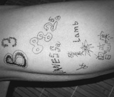
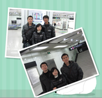

- 多语言
- 换肤
- 插件
- MetaWeblog API
- 高性能，低配额
-
B3log Solo
B3log Solo 是款开源（Apache License 2.0）的博客程序，不仅可以运行在 Google App Engine 上，也可以运行在标准 Servlet 容器上。
-
B3log Latke
XXXXXXX
-
B3log Symphony
XXXXXXX
-
B3log Index
XXXXXXX
-
B3log Community
XXXXXXX
-
B3log Bowknot
基于 jQuery 的简单插件。目前有：chart, completed, dialog, paginate, table, tabs, upload.
-
B3log Maven Plugin
XXXXXXX

B3log 成立
-
B3log Solo 0.1.0 Preview1
经过一个月的奋斗已经初步成型，终于勇敢的发布了 Preview 1
面对 favicon 不会 PS 的孩子很受伤 T-T -
B3log Solo 0.1.0
咯咯，我就是传说中的 D -
B3log Solo 0.2.0
咔咔，我就是神出鬼没的 V -
Lamb 加入
有创意才有新意
实现梦想，即使在中国！羔羊是我，我是 Lamb -
DX 加入
负责任务：相信会更多。
一句话飘过：Two heads are always better than one.土星盐是我，我是 DX -
Jboat 加入
大三学生，热爱开源，处于实习和出去找工作的边缘，技术菜鸟，很可能是刚好在你之前加入的那一个。
负责任务：B3log Solo 团队建设及文档编写。
一句话飘过：热爱生活，相信积累。Smile to see the distance， 我是 Jboat -
Mainlove
有人为你往前冲是一种幸福，有人为你往后退，是一种奢华的幸福。
努力地帮大家写点代码，好让 D & V 早日生儿育女。有人为你往前冲是一种幸福,我是 Mainlove -
B3log solo 0.3.0
走过 0.2.1、 0.2.5 Beta1、 0.2.5 Beta2、 0.2.5、 0.2.6 后， 0.3.0 总算诞生了。
 0.3.0 活跃贡献者的大名 -
b3log.org 二级域名开放
亲，还在为别人不能访问你的博客而苦恼？
亲，你不绑定自己的域名？
那，亲，不要再犹豫了， 快来申请 b3log.org 二级域名 吧！
亲们，快来申请吧！ -
第三方皮肤
不满意现有 B3log Solo 的皮肤？
想要和他人分享自己亲手做的皮肤？
那，亲，不要再犹豫了，快来 开发第三方皮肤 吧！第三方皮肤贡献者：
Noday(左上), Ansen(右上), 答复(左下), chevo(右下) -
收到第一笔捐助
长期维护一个开源项目的确是不容易的。在有一个小团队都为这个项目努力的时候，更应该坚持下去。
期待更多的童鞋加入 B3log 团队，一起推进中国开源软件的发展，方便他人。
首位捐赠者头像，他是 胸毛 -
0.4.0
这一年换了工作，比较繁忙。虽然发布了 0.3.1、 0.3.5、 0.4.0 Beta1、 0.4.0 Beta2， 但 0.4.0 一直拖到现在，在此只能说声抱歉，请大家期待五月份将要发布的 0.4.1！
今天是也是 V 的生日 -
DVLY 齐聚上海
有缘千里来相会，无缘对面不相识。
在阴雨连绵的三月，团队成员 D、Vanessa、Laml、Mainlove（Y）终于在上海会面了。DX、Jboat 就差你们俩了！ 地铁离别照